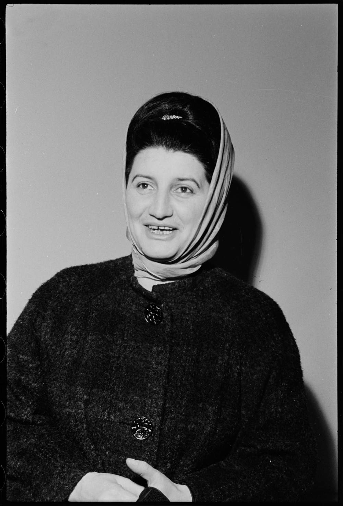

Ljudi koji su obilježili pjesmu
Izvođači sevdaha
Upoznaj njihov život, rad i pjesme. Klik na izvođača otvara njegovu biografiju.
1927–1986 · Mostar
Himzo Polovina
Ljekar, pjevač i sakupljač narodnih pjesama.
Biografija i pjesma →
1936–2007 · Bileća
Safet Isović
Interpretator sevdalinke snažnog i prepoznatljivog glasa.
Biografija i pjesma →
1927–2001 · Beograd
Nada Mamula
Jedan od prepoznatljivih ženskih glasova Radio Sarajeva.
Biografija i pjesma →
1939–2020 · Trebinje
Beba Selimović
Pjevačica poznata kao Dama sevdaha.
Biografija i pjesma →
Rođena 1972. · Sarajevo
Amira Medunjanin
Savremena interpretatorica tradicionalnih pjesama.
Biografija i pjesma →
Rođen 1978. · Sarajevo
Damir Imamović
Muzičar, autor i istraživač historije sevdalinke.
Biografija i pjesma →